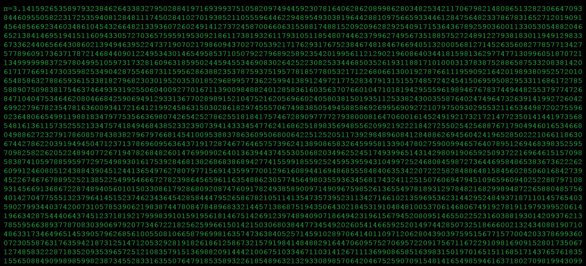
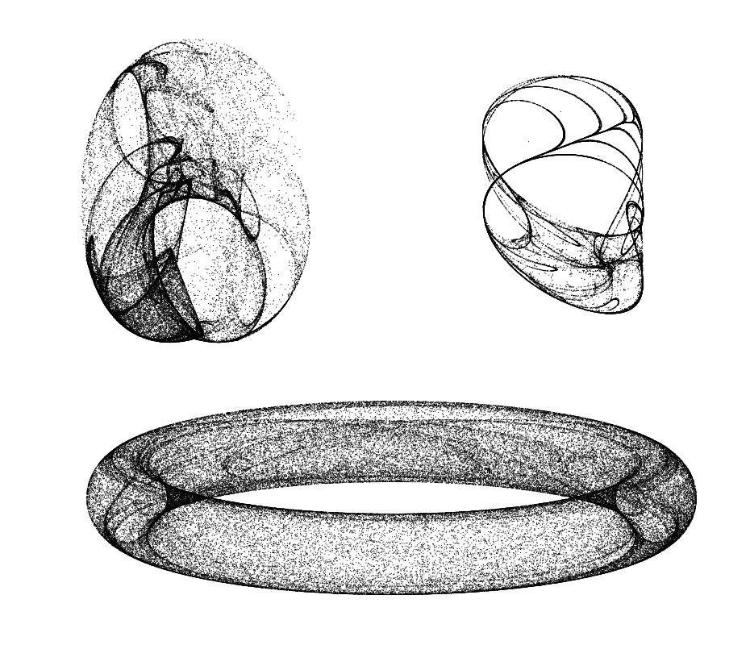
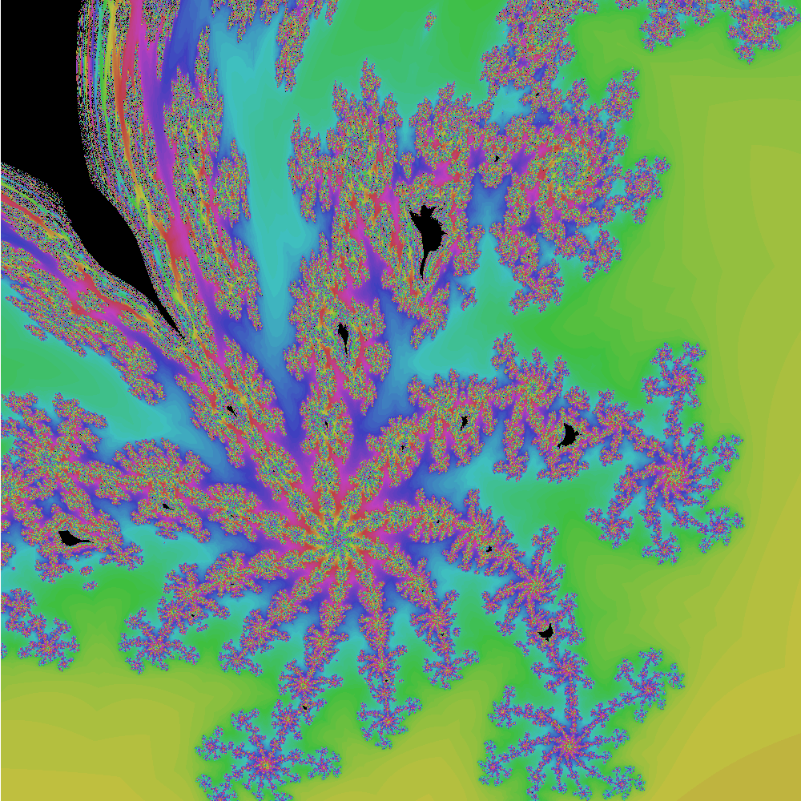
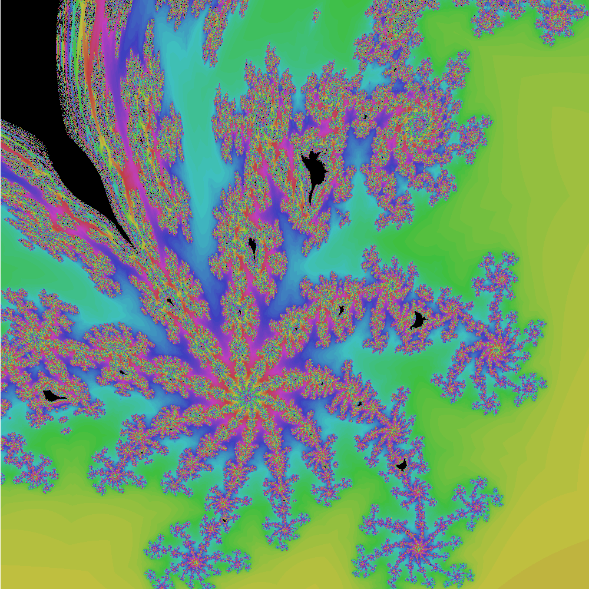
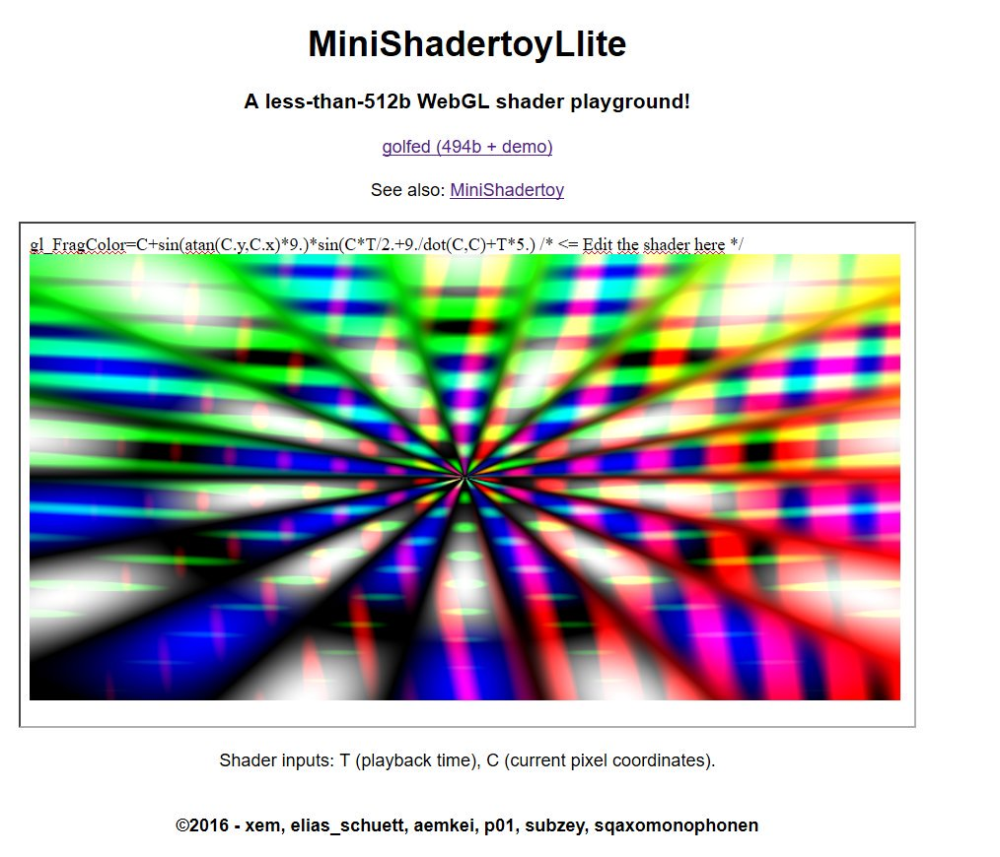
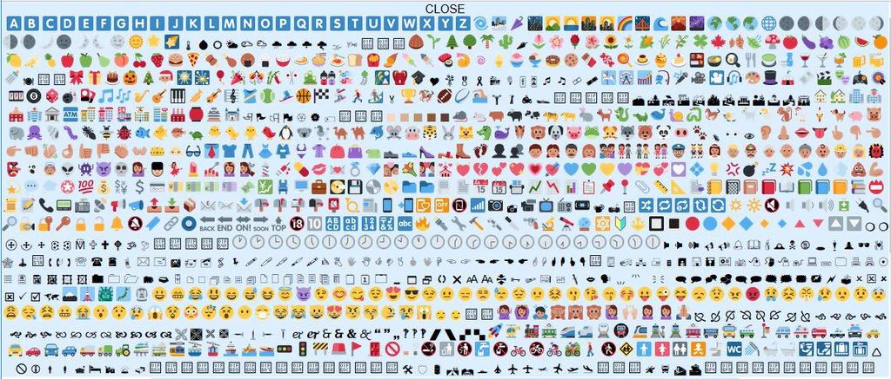
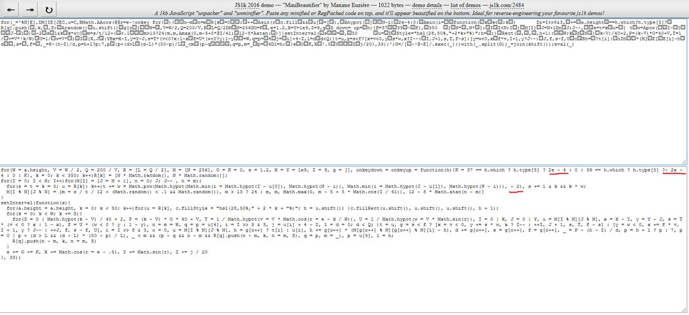

Code-golfing?
Code-golfing is a recreative form of coding where we try to develop a program or a game with the smallest possible source code.This page contains all my code-golfing projects. You can find more projects made by my team on this page!
Join our JS code-golfing Slack room on jsgolf.club (to register, use the form available on register.jsgolf.club).
Mini Mandelbrot
january to may 2016, march to april 2017
A mandelbrot set tracer on a canvas in less than 256b 140b, plus a zoomable version with detailed source code.


Github: here
Demo: here
Variations: here
miniProxy
febuary 2017
A PHP proxy allowing to request any external file (including a domain whitelist)
Github: here
miniSplitScreen
january 2017
A tiny app allowing to load 2, 3, 4 or 6 pages in the same window

Github: here
x2: here
x3: here
x4: here
x6: here
minix86
october 2016 - january 2017 - wip
A x86 (MS-DOS) documentation, disassembler and emulator

Github: here
Documentation: here
Disassembler demo: here
miniRGBdoodle
january 2017
A 256b doodler using the 3 buttons of the mouse for R, G and B. Two colors can be mixed together.

Github: here
Demo: here

MiniMinifier
march to december 2013, december 2016, wip
HTML, CSS and JS minifiers in 128+ bytes, and actually more efficient than most of the other online minifiers.
 Old website:
Old website: miniConwaySerpinski
october 2016
Mini cellular automaton displaying a "conway's serpinski triangle" on a canvas, in 188b.
Golfed with sqaxomonophonen, subzey, nderscore and veubeke

Blog post here
Github: here
Demo: here
miniGameOfLife 2
october 2016
Mini Game of life simulation on a canvas, in 184b.

Blog post here
Github: here
Demo: here
miniSpeechRecognitionAndSynthesis
october 2016
Both speech recotnition and speech synthesis in 146+ bytes of JS. (repeats what you say in the mic, Webkit only)
Blog post: here
Github: here
Demo: here
miniSpeechRecognition
october 2016
A pure JS speech recognition app in 100+ bytes (Webkit only for now)
Blog post: here
Github: here
Demo 1 (open the page, talk and read the result in your default language): here
Demo 2 (say a color name or "chucknorris" and it will be applied to the body): here
miniSpeechSynthesis
october 2016
A pure js speech synthetizer in 73+ bytes

Blog post: here
Github: here
Demo 1 (type some text, then click out of the field to hear it it in your default language): here
Demo 2 (with language choice and Webkit hack): here
miniCodeShaper
october 2016
Paste some JS code, draw something, and your code is drawn in braille with that shape!

Github: here
Demo: here
miniWebRTC
october 2016, wip
A minimalist WebRTC chat without signaling server (both chatters have to exchange each other's signatures via another medium: mail, im, ...)
Github: here
Demo: here
miniCam
october 2016
A tiny webcam display, microphone echo, or both in less than 140 bytes (made with Anders Kaare and Subzey)
Github: here
Demo (cam + mic + cross-browser in 140b): here
PERIOD1k
febuary - june - october 2016
A periodic table of chemical elements, including a ton of information in just 1kb, made with innovati and subzey.
The repo contains our js1k 2016 entry, detailed source code, bonus, plus june and october updates with even more features.

Github: here
Super Chrono Portal Maker
august-september 2016
A 2D puzzle game made with Anders Kaare for JS13kGames 2016, mixing many mechanics inspired by Mario, Portal and Chronotron.

Github: here
Entry: here
Making-of: here
Mini Pi
july 2016
A collection of tiny Pi's digits computations in less than 256b (for the slow ones) or 512b (for the quick ones)

Github: here
Demo (Machin's formula): here
Mini Snake
june 2016
A mini Snake game golfed with all the Codegolf team in less than 600b (canvas version).
See also the sub-256b ASCII version on @p01's repo!

Github: here
p01's repo: here
Demo: here
Mini Peter De Jong Attractor
june 2016
A Peter de Jong attractor simulator in less than 256b.
Also included: an alternative version called "the one ring"
Github: here
Demo: here
Ring: here
Mini Clifford Attractor
june 2016
A Clifford attractor simulator in less than 256b.

Github: here
Demo: here
Mini ASCII Art
june 2016
An image to ASCII art converter in less than 512b.
Fun unexpected feature: if you unzoom (especially on Firefox), nice colors appear!

Github: here
Demo: here
MiniDoodle
may, june 2016
A collection of mini doodling apps (to draw on a canvas). Some of them feature mirroring, zig-zags, pixel-art, etc.

Github: here
MiniBurningShip
may 2016
A burning ship fractal tracer on a canvas in less than 256b, plus zoomable version with detailed source code.
While coding this, I invented the Goose fractal by mistake!
 

Github: here
Demo: here
Mini Langton Ant
may 2016
A Langton's ant simulator, golfed with @subzey, @aemkei and @p01.

Github: here
Demo: here
Mini Shadertoy Lite
may 2016
A minimalist WebGL playground in less than 512b. More info here.

Github: here
Demo: here
Mini Shadertoy
april, may 2016 2016
A Shadertoy clone (WebGL playground) in less than 1kb, golfed with the Codegolf team. More info here.

Github: here
Demo: here
Mini Bookmarklets
april 2016
Acollextion of handy, tiny bookmarklets, featuring an e-mail paster and an emoji keyboard...

Github: here
Demo: here
Mini Regex Tester
april 2016
A tiny Regular Expressions tester, golfed with @subzey and @aemkei.

Github: here
Mini Beautifier
febuary 2016
A JavaScript unpacker and beautifier, developed for js1k 2016.

Github: here
Demo: here
JSotopes
febuary 2016
A table of nuclides / isotopes, also developed for js1k 2016 with @innovati and @subzey. Detailed source code and bonus available.

Github: here
Mini Unicode
december 2015
Unicode slideshows starting at 113b, with many optional enhancements...
Github: here
Obfusc-a-tweet Reloaded
november-december 2015
Abusing Twitter's URL shortener to store and execute ~16kb of JavaScript from a single tweet!
You can read this article explaining how it works.
Or head directly to the packer!
Twitter character counter
november 2015
A tiny Twitter char counter in 78b, inspired by and golfed with Tommy Hodgins and Subzey.
<input onkeyup=c.color=(c.innerHTML=140-value.length)<0?"red":0><font id=c>140
Demo:
140
With this counter, astral Unicode glyphs (like "💩") count as two characters. Here's a more precise version that counts each Unicode character as 1 char, in 104 bytes:
<input onkeyup=c.color=(c.innerHTML=141-value.split(/[^\udc00-\udfff]/).length)<0?"red":0><font id=c>140
Demo:
140
GeoQuiz
august-september 2015
A 13kb geographical quizz I made for JS13kgames

Website: http://xem.github.io/JS13k15/
Post-mortem: http://xem.github.io/articles/#js13k2015
MiniKeyCode
august 2015
Find the keyCode of a key in 33b (or 128b for the complete version)
Website: https://github.com/xem/miniKeyCode
MiniGameOfBraille
august 2015 to june 2016
A Braille-art Game of Life in less than 400b.
2016 update: canvas version in less than 256b.

Website: http://xem.github.io/miniGameOfBraille
MiniJSPerf
november 2014 - january 2015
A JSPerf clone in less than 256b
Website: http://xem.github.io/miniJSperf
MiniShadowArt
october 2014
An app converting any image in CSS box-shadow pixel-art in less than 512b
Website: http://xem.github.io/miniShadowArt
Alchemixer
august-september 2014
My entry for the 2014 JS13kgames contest. You can read a post-mortem of this game in this article.
Website: http://xem.github.io/alchemixer/
Github: https://github.com/xem/alchemixer
MiniCountdown
september 2014
A countdown app in less than 256b. It countdowns until the timestamp given in the URL arrives.
Website: http://xem.github.io/minicountdown/#1500000000000
Github: https://github.com/xem/minicountdown
in-n-out
august 2014
A HTML editor where you switch between page and source code using right-click, in less than 256b.
Website: http://xem.github.io/in-n-out
Github: https://github.com/xem/in-n-out
MiniPopTiles
august 2014
A game inspired by Pop Tiles, in less than 350b.
Website: http://xem.github.io/minipoptiles
MiniSimon
july 2014
A simon game (with sound!) in less than 500b
Website: http://xem.github.io/minisimon
ASCII-art Golfer
june 2014
An ASCII-art golfer in 140 characters:
eval(unescape(escape('𘡜𫠷𧀲🠾𧁮𧀱𝐮𧁮𞁏🠾𘀹𫠹𧁜𫠹𛱜𧀵𧁮𧁮𩱳𧡞𧡞𧡞𧡠𘠮𬡥𬁬𨑣𩐨𛱜𩀫𛱧𛁦𭑮𨱴𪑯𫠨𨐩𮱲𩑴𭑲𫠠🐽𨐿𨐺𠑲𬡡𮐨𪡯𪑮𘀧𠑲𬡡𮐨𝐱𪡯𪑮𧠢𘡜𫠢').replace(/uD./g,'')))
Result:
'\ . . |>18>>
\ . ' . |
O>> . 'o |
\ . |
/\ . |
/ / .' |
jgs^^^^^^^`^^^^^^^^^^^^^^^^^^^^^^^^^^^^^^^^^^^^^^^^^^^^^^^^^^
CSSPrite
june 2014
A CSS Sprite generator based on drag & drop in 567b
Website: http://xem.github.io/CSSprite/
MiniGameOfLife
september 2013, june 2014
First, it was a Game of Life engine in just 126 bytes.
Now, it's a complete implementation (HTML + JS) in 238b! (thanks to @subzey and @aemkei for their help)
Source code:<body onkeyup="a=b;b=[h='<pre>'];for(i=40;i--;h+='\n')for(j=80;j--;){k=80*i+j;d=0;for(z in e=[1,79,80,81])d+=a[k+e[z]]+a[k-e[z]];h+='<a onclick=innerHTML=q[b['+k+']^=1]>'+q[b[k]=3==d|a[k]&2==d]}innerHTML=h"onload=f.onkeyup(b=q=".@") id=f>
Website: http://xem.github.io/miniGameOfLife
Postit
may 2014
A notepad app with local persistence in 91b, inspired by @addyosmani's experiment
Website: http://xem.github.io/postit
Prettycode
may 2014
This is a small app (166b) made to display minified / golfed code in a reader-friendly way. (Thanks to @subzey and @aemkei for their help)
Source code:<input oninput=h="";for(i=99;--i;m?p.textContent=h+=v:0)m=1,v=value.replace(eval("/.{"+i+"}(?=(\\W=|.\\B.|..$)?).|.*/g"),function(v,l){m&=!l;return"\n"+v})><pre id=p>
Demo (the same source code prettified in 28 chars/line):
<input oninput=h="";for(i=99
;--i;m?p.textContent=h+=v:0)
m=1,v=value.replace(eval("/.
{"+i+"}(?=(\\W=|.\\B.|..$)?)
.|.*/g"),function(v,l){m&=!l
;return"\n"+v})><pre id=p>
Website: http://xem.github.io/prettycode
Obfusc-a-tweet: How many JavaScript code can we fit in 140 characters?
november 2013, may 2014, may 2016
The answer is: 190 194 characters!
On 140byt.es, the goal is to write JavaScript functions that fit in a tweet, i.e. in 140 characters.
Until now, these functions were always written in "clear" ASCII characters. But a tweet can contain 140 Unicode characters, including the "astral" ones, encoded on 4 bytes.
So I had the idea to use this encoding (UTF-16) to compress a long JavaScript code, and insert this encoded string in a JavaScript expression able to decode and execute it, while respecting the 140 chars limitation.
Here's the binary representation of an astral UTF-16 character. It is composed of two 16-bit halves (or "surrogates"), in which the first 6 bits are fixed. The last 10 bits (shown as "x" here) can take any value.
110110xx xxxxxxxx 110111xx xxxxxxxx
Here's the binary representation of the string "ABCD" (in ASCII). Each character is encoded in 1 byte.
(In reality, 7 bits are enough to encode an ASCII character, but in modern charsets, the 8th bit is let at 0).
01000001 01000010 01000011 01000100
So the idea is to use only astral UTF-16 characters and store an ASCII character at the end of each surrogate.
Here's the string "ABCD" stored in 2 UTF-16 characters (2 chars in one: that's a compression ratio of 50%!):
11011000 01000001 11011100 01000010 11011000 01000011 11011100 01000100 ==> 𠑂𠱄
|--A---| |--B---| |--C---| |--D---| (ABCD encoded)
Here's an encoder (129 bytes long) that makes this compression:
z=function(b,c,a,f,e){c="";f=String.fromCharCode;for(a=0;190>a;a+=2)c+=f(55296+b[e="charCodeAt"](a))+f(56320+b[e](a+1));return c}
And here is the expression decoding and executing the original JavaScript code (thanks to @subzey for his help):
// replace "𠑂𠱄" with your encoded string eval(unescape(escape`𠑂𠱄`.replace(/uD./g,'')))
This decoder-executer is only 43 bytes long. So we can execute 194 ((140 - 43) x 2) JS characters in a single tweet.
Demo:
Now there's an app for that: Obfusc-a-tweet !
Floppy dragon
febuary 2014
My entry for JS1k 2014's contest. You can read a post-mortem of this game in this article. https://github.com/xem/flappydragon
Hello World in ASCII-art
febuary 2014
A stackexchange challenge. Best JS solution: 117 bytes (to execute in a JS console):
for(i=s="";l=[43117609029,64070269789,46349920852,46890400349][i++];)for(j=0,s+="\n";c=l.toString(2)[j++];)s+=" #"[c]
Best ES6 solution (works on Firefox): 108 bytes:
[,0xa0a028045,0xeeae2bb5d,0xacaabaa54,0xaeae2ba5d].map(a=>a.toString(2).replace(/./g,b=>' #'[b])).join('\n')
link
Chip8
january 2014
A chip8 emulator in about 1kb, and many public domain games to try
Website: https://github.com/xem/chip8
Hex
january 2014
A hexadecimal file viewer / editor in 256b / 1kb.
Website: http://xem.github.io/hex
A JavaScript function that tells which of its line(s) have been deleted
december 2013
A stackexchange challenge
Best JS solution for 0 or 1 deleted line: 78 bytes
(function(n){
a=n-=1
n-=2
+3
+4;if(this.a)return 5
return n;var a
})(10)
link
Best JS solution for 0 / 1 / 2 deleted lines: 213 bytes
(function(r){
r.shift();
r.splice(r.indexOf(2),1)
r.splice(r.indexOf(3),1);a=b=1;if(this.a&&this.b)return r
var a;r.splice(r.indexOf(4),1);b=1;if(this.b)return r
var b;r.pop();return r[0]?r:0
})([1,2,3,4,5])
link
Paste
december 2013
A paste service (like pastebin) in 140 characters.
Just write or copy-paste anything in the page and share the URL.
Website: http://xem.github.io/pasteGithub: https://github.com/xem/paste
MiniCodeEditor
march 2013 to june 2016
A HTML/CSS/JS sandbox (like codepen or jsfiddle) in just 161+ characters.
2016 update: a 64b lite version
 Website: http://xem.github.io/miniCodeEditor
Website: http://xem.github.io/miniCodeEditor
Keys pressed
september to december 2013
A way to know at any moment if a key is being pressed, in just 60 bytes.
k={};onkeydown=onkeyup=function(e){k[e.keyCode]=!!e.type[5]}
To use it, all you have to do is choosing "n" - a keycode - and test k[n]. This is true when the corresponding key is pressed, and false when it's not pressed anymore.
(If it has never been pressed, k[n] will be undefined, which is considered false in a test.)
Demo: Here is the state of k in real time. Press any key to make it change.
k = [ ]
MiniSweeper
december 2013
A minesweeper game in less than 512 bytes
<table border id=t><script>b=[v=[]];f=[l=g=0];n=[];function r(d){for(M=!l;M;l=g)for(a=M=H="";s>++a;)for(j=s,H+="<tr>";~--j;H+="<th onclick=b[i="+I+"]?g--:v[i]=1;r() oncontextmenu=for(f["+I+"]^=g=1,a=0;a<s*s;)g&=b[a]^!f[a++];return!!r() "+(v[I]|g||"bgcolor=tan")+">"+(f[I]?"⚑":b[I]&g?"💣":v[I]|g&&n[I]||" "))for(I=a*s+j,T=d?b[I]=.1>Math.random():0,x=2;~x--;)for(y=2;~y--;~B&&B<s?(n[C]=~~n[C]+T)||v[I]|b[I]|!v[C]?0:v[I]=M=1:0)B=j+y,C=(a+x)*s+B;t.innerHTML=H}r(s=9)</script>
Website: http://xem.github.io/MiniSweeper
A JS program that displays all the characters it doesn't contain
A stackexchange challenge. Best JS solution: 88 characters.
november 2013
alert("BCDFGHIJKMNPQUVXYZ".toLowerCase())// !#$%&'*+,-0123456789:;<=>?@[\]^_`{|}~AERTOWS
(prints "bcdfghijkmnpquvxyz")
link
Snail
october 2013
A snail matrix generator in 133 bytes
s=function(e,c,d,b,f,h,g){c=[[]];d=1;b=h=0;for(f=-1;e;e--){for(g=1;g<2*e;g++)g>e?b+=d:f+=d,c[b]||(c[b]=[]),c[b][f]=++h;d=-d}return c}
Demo:
Size:
Binary operations
september 2012
Binary operations in JavaScript are a trap. I wrote a wtfjs post about this. (link)
So I wrote a 137 bytes lib allowing to do "left shifts", "right shifts", and extracting some bits from a number, safely.
M=Math;function l(a,b){return a*M.pow(2,b)}function r(a,b){return M.floor(a/M.pow(2,b))}function b(a,b,c){return r(a,b)&M.pow(2,c-b+1)-1}